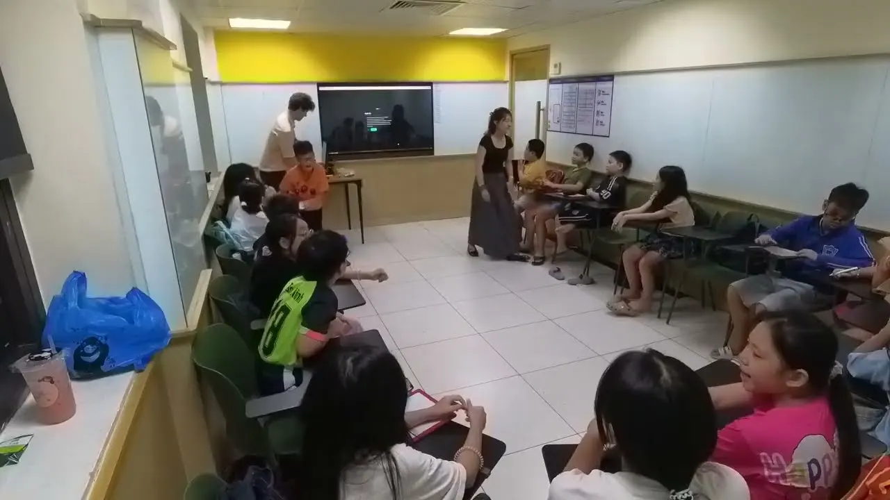
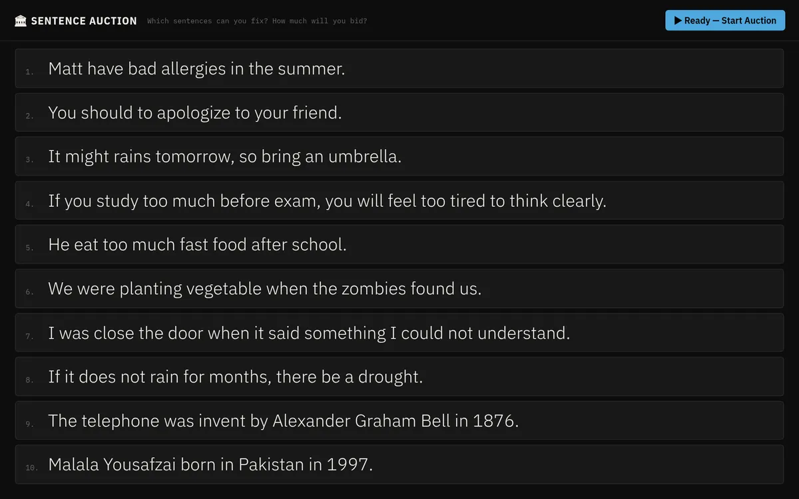

Watch lesson
Custom Classroom Games: Language Learning Suite in Practice
A recorded class at ILA Vietnam using the teacher-run game platform from the Language Learning Suite. The lesson uses custom vocabulary and grammar games for whole-class review: teacher facilitation, student team play, and real-time scoring.
Demonstrateslive classroom teaching, teacher presence and facilitation, whole-class participation, review and practice activity design, original classroom software in use